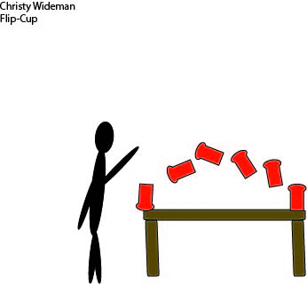

Design Work
Aspiring journalist in writing and reporting your most sought out entertainment and news.
While attending the University of Florida, I was able to pactice computer skills that dealt with iCloud applications such as Adobe PhotoShop CC, Adobe InDesign CC and Adobe Illustrator CC. These applications have enhanced my basic knowledge of photo-editing, logo designing and magazine spread designing. I have worked with both Audacity and Soundslides, as well, while making alternative design projects. Here are a few examples of my work.

PDF "about me" magazine spread using InDesign
A PDF of my practice with magazine spreads using InDesign
My first logo made using Illustrator
PDF of my knowledge of different Typeface from around the community using PhotoShop
Another PDF of my practice with magazine spreads using InDesign